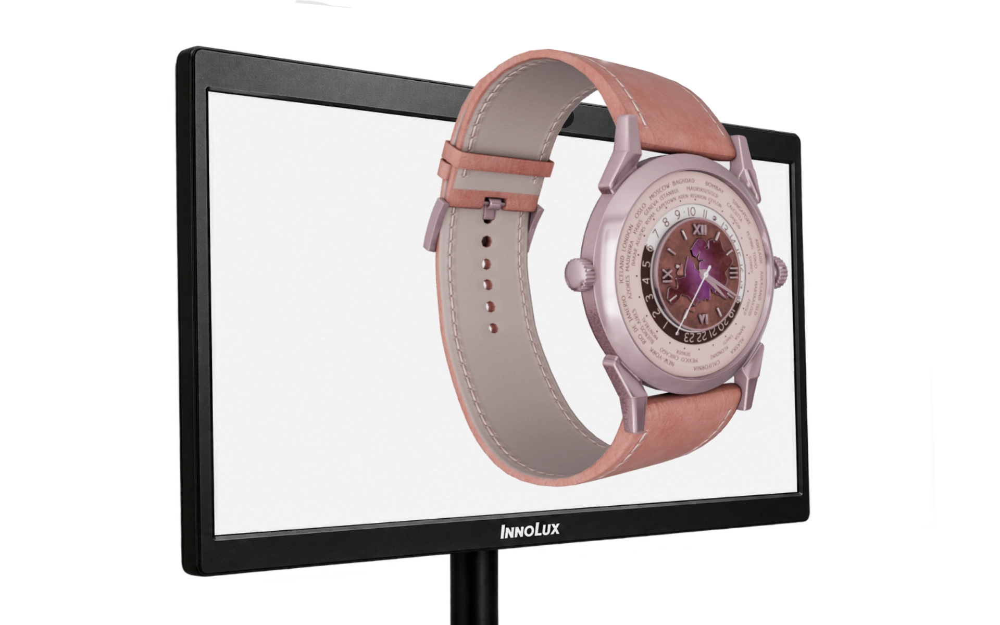
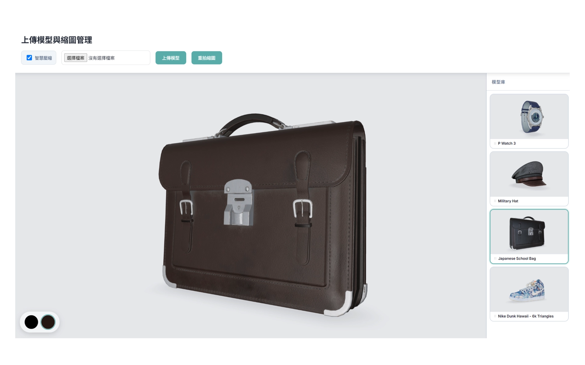
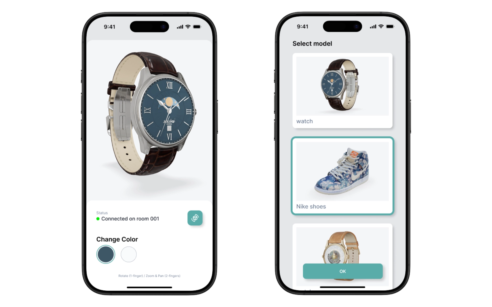
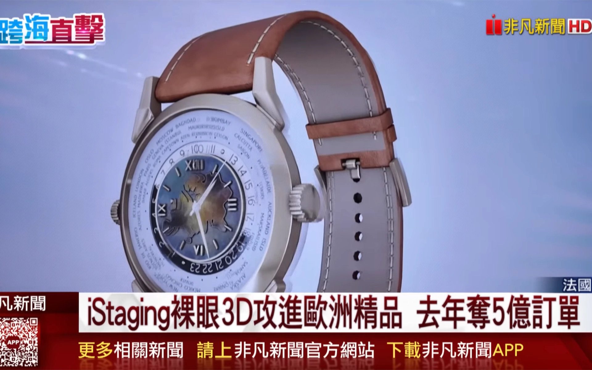

單人追眼式裸視 3D
手機操控，追眼立體展示。
精品展示需要讓觀眾看見造型比例與細節，但固定影片限制了自主觀看，若使用眼鏡也增加準備步驟。本案以單人追眼呈現立體視差，讓觀眾免戴眼鏡即可從自己的位置觀看；再以手機掃碼連線，支援旋轉、縮放、換色與切換展品，讓觀眾依興趣查看局部細節，將探索節奏交還給現場觀眾。

0 秒
免裝 App 掃碼即控
< 30 ms
人眼追蹤推播時延
100%
展會現場連線可靠度
01 / ARCHITECTURE
雲端模型與視差渲染
串接雲端模型處理、桌面追眼數據與網頁光柵渲染，建立跨端顯示流程。
雲端模型後台與智慧壓縮
以 Node.js 壓縮模型，產生多視角縮圖與材質色票。
PyQt 追蹤座標平滑串接
取樣人眼 3D 座標，經濾波平滑後推播至網頁渲染層。
Three.js 即時視差光柵渲染
依追眼座標計算偏軸視角，渲染多視圖光柵與立體景深。
架構抉擇：WebGL 渲染 vs. Native 遊戲引擎
以自研 Three.js 視差光柵 Shader 取代 Native App，掃碼即控無需等待下載，徹底消除展場互動摩擦力。

02 / IMPLEMENTATION
手機遙控與房間配對
手機掃描展台 QR Code，即可配對專屬房間並遙控展品，無需安裝 App。
免裝 App 掃碼配對
手機掃碼開啟 Web 操作端，以專屬房間配對展台。
多點觸控與指令同步
手勢旋轉、縮放、平移與換色，經 WebSocket 同步至展台。
連線重試與模型快取策略
加入斷線重連與模型快取，支援展場長時間的多端操作。

03 / OUTCOME
精品展會應用與媒體報導
系統於法國歐洲精品展會與台灣現場展示，將名錶與精品模型置於免配戴眼鏡的 3D 數位展櫃中。整合追眼定位、視差渲染、雲端模型管線與手機操作，讓觀眾可在現場自主觀看與探索；展出成果獲非凡電視台新聞專題跨海直擊報導。
